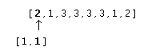
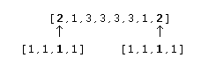

The ERODE function implements the erosion operator on binary and grayscale images and vectors. This operator is commonly known as “ shrink” or “ reduce”.
See the description of the DILATE function for background on morphological operators. Erosion is the dual of dilation. It does to the background what dilation does to the foreground. Briefly, given an Image and a structuring element, Structure , the ERODE function can be used to remove islands smaller than the structuring element.
Over each pixel of the image, the origin of the structuring element is overlaid. If each nonzero element of the structuring element is contained in the image, the output pixel is set to one. Letting A Ä B represent the erosion of an image A by structuring element B , erosion can be defined as:
where (A) -b represents the translation of A by b . The structuring element B can be visualized as a probe that slides across image A , testing the spatial nature of A at each point. If B translated by i,j can be contained in A (by placing the origin of B at i,j ), then i,j belongs to the erosion of A by B . For example:
In this example, the origin of the structuring element is at (0, 0).
Used with grayscale images, which are always converted to byte type, the ERODE function is accomplished by taking the minimum of a set of differences. It can be used to conveniently implement the neighborhood minimum operator with the shape of the neighborhood given by the structuring element.
Result = ERODE( Image , Structure [, X 0 [, Y 0 [, Z 0 ]]] [, / GRAY [, / PRESERVE_TYPE | , / UINT | , / ULONG ]] [, VALUES = array ] )
The ERODE function returns the erosion of Image by the structuring element Structure .
A one-, two-, or three-dimensional array upon which the erosion is to be performed. If this parameter is not of byte type, a temporary byte copy is obtained. If neither of the keywords GRAY or VALUES is present, the image is treated as a binary image with all nonzero pixels considered as 1.
A one-, two-, or three-dimensional array to be used as the structuring element. The elements are interpreted as binary values—either zero or nonzero. The structuring element must have the same number of dimensions as Image .
Optional parameters specifying the one-, two-, or three-dimensional coordinate of the structuring element’s origin. If omitted, the origin is set to the center, ([ N x /2], [ N y /2], [ N z /2]), where N x , N y , and N z are the dimensions of the structuring element array. The origin need not be within the structuring element.
Set this keyword to perform grayscale, rather than binary, erosion. Nonzero elements of the Structure parameter determine the shape of the structuring element (neighborhood). If VALUES is not present, all elements of the structuring element are 0, yielding the neighborhood minimum operator.
Set this keyword to return the same type as the input array. This keyword only applies if the GRAY keyword is set.
Set this keyword to return an unsigned integer array. This keyword only applies if the GRAY keyword is set.
Set this keyword to return an unsigned longword integer array. This keyword only applies if the GRAY keyword is set.
An array of the same dimensions as Structure providing the values of the structuring element. The presence of this keyword implies grayscale erosion. Each pixel of the result is the minimum of Image less the corresponding elements of VALUE. If the resulting difference is less than zero, the return value will be zero.
Note:
Also see “Eroding and Dilating Image Objects” (Chapter 9,
Image Processing in IDL
) in the
help/pdf
directory of your IDL installation.
This example thresholds a grayscale image at the value of 100, producing a binary image. The result is then “opened” with a 3 pixel by 3 pixel square shape operator, using the ERODE and DILATE operators. The effect is to remove holes, islands, and peninsula smaller than the shape operator:
; Create a 400x400 byte array
A=BYTSCL(DIST(400))
; Threshold and make binary image:
B = A GE 100
; Create the shape operator:
S = REPLICATE(1, 3, 3)
; "Opening" operator:
C = DILATE(ERODE(B, S), S)
; Show the result:
TVSCL, C
For grayscale images, ERODE takes the neighborhood minimum, where the shape of the neighborhood is given by the structuring element. Elements for which the structuring element extends off the array are indeterminate. For example, assume you have the following image and structuring element:
image = BYTE([2,1,3,3,3,3,1,2])
s = [1,1]
If the origin of the structuring element is not specified in the call to ERODE, the origin defaults to one half the width of the structuring element, which is 1 in this case. Therefore, for the first element in the image array, the structuring element is aligned with the image as depicted below:

This will cause an indeterminate value for the first element in the ERODE result. If edge values are important, you must pad the image with as many elements as there are elements in the structuring element that extend off the array, in all dimensions. The value of the padding elements must be the maximum value in the image, since ERODE calculates a neighborhood minimum. In this case, you would need to pad the image with a single leading 3. If the structuring element were s=[1,1,1,1] , and you specified an origin of 2, the structuring element would align with the image as follows:

Therefore, you would need to pad the image with at least two leading 3s and at least one trailing 3. You would then perform the erosion operation on the padded image, and remove the padding from the result.
The following code illustrates this method:
image = BYTE([2,1,3,3,3,3,1,2])
s = [1,1] ; Structuring element
PRINT, 'Image: '
PRINT, image
PRINT, 'Erosion using no padding: '
PRINT, ERODE(image, s, /GRAY)
result = ERODE([MAX(image), image], s, /GRAY)
PRINT, 'Erosion using padding: '
PRINT, result[1:N_ELEMENTS(image)]
IDL prints:
Image:
2 1 3 3 3 3 1 2
Erosion using no padding:
0 1 1 3 3 3 1 1
Erosion using padding:
2 1 1 3 3 3 1 1
|
Pre 4.0 |
Introduced |
DILATE , MORPH_CLOSE , MORPH_DISTANCE , MORPH_GRADIENT , MORPH_HITORMISS , MORPH_OPEN , MORPH_THIN , MORPH_TOPHAT